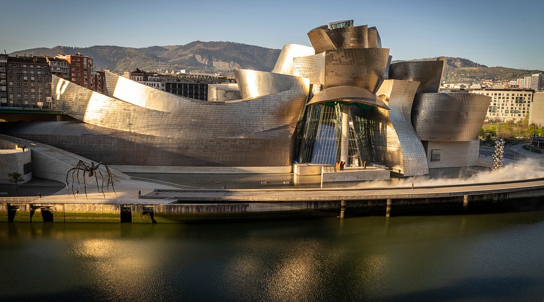

« L'architecture doit parler de son temps et de son lieu, mais rêver d'éternité. »
L'exposition
Inauguré en 1997, le Musée Guggenheim de Bilbao est une œuvre architecturale signée Frank Gehry. Ses formes titanesques abritent des collections d'art moderne et contemporain parmi les plus prestigieuses au monde. Explorez nos salles et découvrez des œuvres qui repoussent les frontières de la création.
Découvrir le musée
